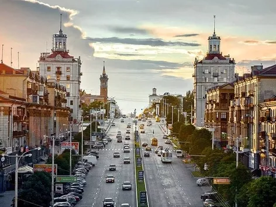
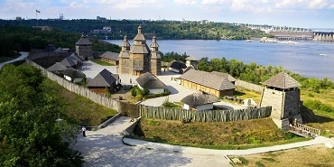
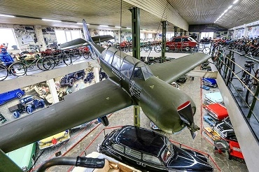

Запоріжжя - надзвичайне українське місто, яке приваблює своєю красою. Дізнайтеся детальніше про його історію та захопливі факти
Запоріжжя – місто, в якому досі відчувається козацький дух, попри сучасні забудову й індустріальні підприємства. Місто, засноване ще за часів Київської Русі, має чим здивувати гостей і місцевих жителів.
Більшість українців знають, що Запоріжжя – великий адміністративний, промисловий та культурний центр півдня України, а також одне з найдавніших українських міст. Назва міста пов'язана із Дніпровськими порогами, що від козацького острова Хортиця на 90 км вверх за течією Дніпра.
Та чи може Запоріжжя приваблювати туристів? Пропонуємо вам поринути в історичні та цікаві факти про місто разом з нами.
Історичні цікавинки: колиска індоєвропейців
На думку лінгвістів й істориків, причорноморські степи Запорізької області були батьківщиною індоєвропейців – народу, від якого походить половина людства. Припускають, що індоєвропейці жили між Дніпром і Волгою і першими почали зводити кургани. Відомостей про цей народ збереглося мало, адже він розселився по всій Євразії.
Найбільший річковий острів України
Наприкінці 16 століття на теренах Запорізької області було засновано Запорізьку Січ – столицю козацького краю. Її заснував у 1556 році Дмитро Вишневецький, побудувавши власним коштом невелику фортецю на острові Мала Хортиця. Цей острів – найбільший на Дніпрі й включений до списку семи чудес України. Його площа становить близько 23,5 кв. км, а це майже 10% відсотків території сучасного Запоріжжя.
У 2009 році на острові відкрився історико-культурний комплекс “Запорізька Січ”, як узагальнення боротьби й досягнень козаків 16-18 століть. До повномасштабної війни комплекс “Запорізька Січ” працювала як музей, проте наразі експозиція закрита. Однак ми рекомендуємо відвідати Січ після відкриття, адже вона залишається символом національної свідомості українців.
Не зовсім радянська ДніпроГЕС
Хоча Запоріжжя не може похизуватися архітектурними пам`ятками, проте індустріальні локації теж дивують і приваблюють туристів. Дніпровська ГЕС є найстаршої водною електростанцією в Україні, а на момент її будування була найбільшою в Європі.
До речі, ДніпроГЕС не можна назвати суто радянським творінням. Під час зведення цього об`єкта використовували американські та німецькі технології та обладнання. Безумовно, генеральне керування й проєктування здійснювали фахівці з Москви. Та наглядали за будівництвом керівники компаній "H.L.Cooper & Co" та "Siemens". Додамо, що частина критичного обладнання також була імпортним.
Тролейбуси перетинають греблю тільки в Запоріжжі?
Унікальні тролейбусні маршрути працюють тільки в Запоріжжі. 28 квітня 1958 року було відкрито маршрут, який з'єднує “Соцмісто” з Правим берегом через греблю Дніпровської ГЕС. Наразі унікальний досвід перетину греблі громадським транспортом можна отримати тільки в цьому місті
Додамо, що тролейбусні сполучення відкрили ще в 1949 році, що зробило Запоріжжя сьомим містом в Україні з тролейбусним рухом. До речі, перше депо розташовувалося на території заводу “Запоріжсталь.”
Найбільший приватний музей України
У Запоріжжі працює музей “Фаетон”, у якому експонують колекцію техніки. Відвідувачі можуть побачити понад 250 одиниць рідкісних ретроавтомобілів, мотоциклів, військової техніки та зброї. Цікаво, що більшість експонатів працюють донині.